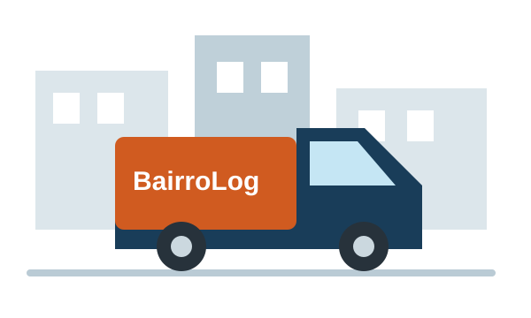
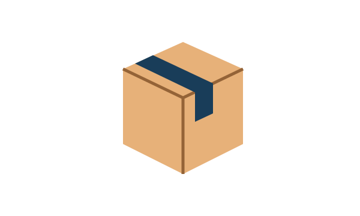
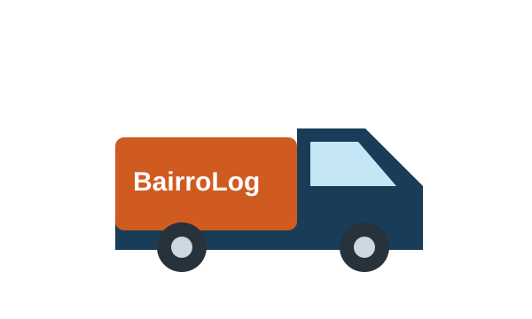

Missão
Apoiar o comércio local com serviços de coleta e entrega organizados e cuidadosos.
LOGÍSTICA PARA A COMUNIDADE
Uma proposta de coleta e entrega para apoiar pequenos comerciantes e facilitar o recebimento de compras pelos moradores.
Conheça nosso atendimento
A EMPRESA
A BairroLog foi idealizada neste projeto acadêmico para apoiar pequenos comércios que precisam entregar seus produtos, mas não possuem estrutura própria de transporte. A proposta reúne coleta no estabelecimento, organização dos endereços e entrega aos moradores de uma área delimitada.
A empresa é fictícia e está na fase de planejamento. O site demonstra como seus serviços poderiam ser apresentados à comunidade.
Apoiar o comércio local com serviços de coleta e entrega organizados e cuidadosos.
Ser uma referência de confiança para comerciantes e moradores do bairro.
Responsabilidade, compromisso, respeito, transparência e valorização do comércio local.
SERVIÇOS PROPOSTOS

Retirada de mercadorias em pequenos estabelecimentos, conforme o horário combinado.

Transporte de pequenas mercadorias entre o comércio e o endereço informado pelo cliente.

Consulta de CEP para auxiliar no preenchimento do endereço e reduzir erros de digitação.
QUEM DESENVOLVE
Conheça os integrantes do grupo e as funções propostas para cada um na empresa fictícia BairroLog.
Administração
Operações logísticas
Atendimento ao cliente
Planejamento de entregas
Suporte tecnológico
FALE COM A BAIRROLOG
Preencha o formulário para testar o atendimento. A consulta de CEP utiliza dados reais do ViaCEP.
Este é um formulário de demonstração. A mensagem não é enviada nem armazenada. Somente o CEP é consultado no serviço externo.